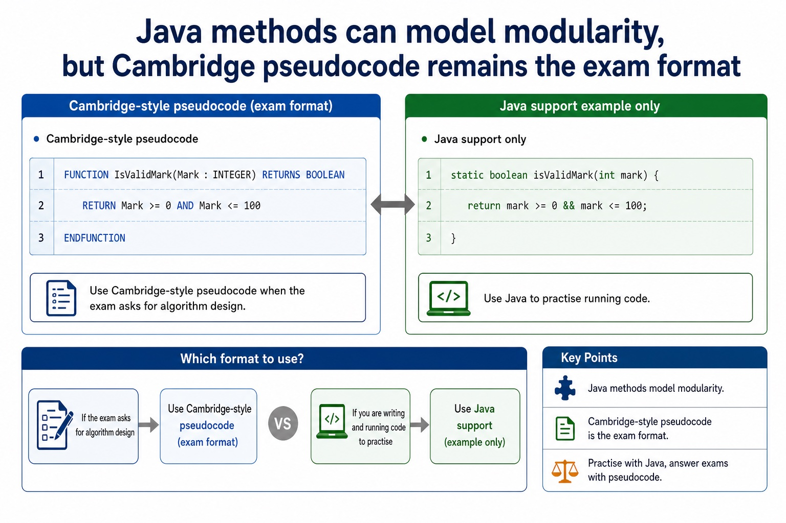

Cambridge AS9618 | Paper 2 | Section 11: Programming
Clear and efficient Cambridge pseudocode
Flexible-depth lesson
Clear and efficient Cambridge pseudocode
S11.09 | Visual relationships, mechanisms and worked examples.
Quickdiagnose + essentials
Fullcomplete explanation
Deepprerequisites + extension
Choosepractice by need
Teacher choice
Choose the depth for this group
Quick route
Use the diagnostic, learning objectives, first worked example and foundation question. Stop once the learner can explain the central distinction accurately.
Full route
Teach every knowledge-point material set, the worked method and all lesson questions.
Deep route
Add the prerequisite refresher, ask learners to connect the concept checklist, discuss the labelled extension and complete a transfer question without a model answer.
Part 1 | optional depth
Prerequisite knowledge and quick diagnostic
Recall the main conclusion from Lesson 078: Functions, interfaces and return values.
Give one accurate definition or method step before continuing. If it is missing, revisit only that prerequisite.
Part 2 | visual explanation
Learn each point through visuals
Use the relationship map, mechanism and concrete cue before opening precise wording.
01
S11.09 · process
Clear and efficient Cambridge pseudocode
Concept relationships
IdentifiersNames reveal purpose
IndentationShows nested control structure
EfficiencyAvoids unnecessary repeated work
ClaritySteps are easy to trace
CorrectnessOptimisation must preserve results
clearClear and efficient Cambridge pseudocode.
See how it works
Plan
Translate the stated design
Clear and efficient Cambridge pseudocode.
Execute
Apply one complete operation
Clear Cambridge pseudocode uses meaningful identifiers, consistent indentation, complete Cambridge constructs and a traceable control path.
Test
Trace state and boundaries
Efficient pseudocode.
S11.09 diagrams
01
Comparison · 1 of 1
Java methods can model modularity, but Cambridge pseudocode remains the exam format

Open text transcript
Java support only
Cambridge-style pseudocode
FUNCTION IsValidMark(Mark : INTEGER) RETURNS BOOLEAN
RETURN Mark = 0 AND Mark <= 100
ENDFUNCTION
Java support example only
static boolean isValidMark(int mark) {
return mark = 0 && mark <= 100;
Use Java to practise running code, but use Cambridge-style pseudocode when the exam asks for algorithm design.
Open precise syllabus wording
Write clear and efficient Cambridge pseudocode.
Write efficient pseudocode.
Open precise terminology and exam facts
Write efficient pseudocode.
Efficient pseudocode avoids unnecessary repeated work and selects a structure suited to the data and stopping rule. For example, total and count can be updated during one traversal instead of scanning the same array twice when both results are needed.
Efficiency does not justify incorrect bounds, hidden assumptions or compressed code that cannot be traced. A strong answer remains clear: initialise once, access only valid data, avoid redundant calculations and use meaningful identifiers and coherent constructs.
At AS Level, justify an improvement from the actual algorithm, such as fewer repeated passes or stopping a search once the target is found. Do not claim that shorter text alone proves a more efficient algorithm.
Clear Cambridge pseudocode uses meaningful identifiers, consistent indentation, complete Cambridge constructs and a traceable control path. Efficient pseudocode avoids unnecessary repeated work while preserving correctness.
Worked method
Count passes and total in one traversal
Combine two traversals
Set Total and PassCount to 0 before one FOR loop through Marks[1:30].
Add each mark to Total and increment PassCount only when the mark is at least 50.
Output both values after NEXT Index.
Part 3 | select by learner need
Practice by question type
writewritefoundation8 marks
Question 1. Write an algorithm that first totals Marks[1:30] and then makes a second pass to count passes, using one clear traversal. Explain the efficiency improvement. Write two full traversals as one clear and efficient Cambridge pseudocode traversal and justify the change.
Show answer and marking guidance
Answer: initialises Total and PassCount once before the loop; uses one loop over valid indexes 1 to 30; updates Total and conditionally updates PassCount inside that loop; outputs both results after the loop; explains that the rewrite removes a redundant second traversal without changing the result; clear Cambridge pseudocode; one correct traversal; avoids repeated work; valid efficiency justification
Marking guidance: Do not award an efficiency claim based only on fewer written lines; the revised pseudocode must perform less repeated work and remain correct. Do not credit an efficiency claim based only on line count.
Common error: For the command word write, perform that exact action; do not replace it with an unrelated fact.
explainexplainapplication2 marks
Question 2. Why is one combined traversal more efficient than two separate full traversals here?
Show answer and marking guidance
Answer: The same 30 elements are read once while both required results are updated, avoiding a redundant second pass.
Marking guidance: Award one mark for each distinct, technically accurate point or method step.
Common error: Do not repeat the same point in different words; each mark needs a separate idea or method step.
applyrecalltransfer2 marks
Question 3. Does shorter code always mean more efficient code?
Show answer and marking guidance
Answer: No; the amount of work and correctness matter.
Marking guidance: Award one mark for each distinct, technically accurate point or method step.
Common error: Do not copy the worked example unchanged; transfer the method and check it against the new context.
Part 4 | close when ready
Summary and exam reminders
Summary
Define clear and efficient cambridge pseudocode with the exact technical vocabulary expected by the syllabus.
Use the lesson method on a fresh context and show the intermediate decision, representation or calculation.
Match the shape of the answer to the command word and the available marks.
Check the final answer against the scenario instead of repeating a memorised sentence.
Common error to correct
Students often think working Java automatically means good pseudocode. Correction: Paper 2 rewards clear Cambridge-style algorithm expression.
Exam technique
Follow the command word: state gives a fact; explain links a cause to a consequence; compare covers both sides.
Match the number of independent points or method steps to the available marks.
For clear and efficient cambridge pseudocode, use the exact technical term before applying it to the scenario.